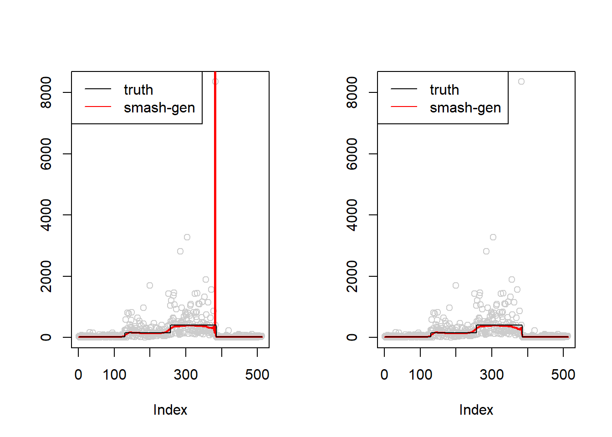

Set highest coeffs to 0
Dongyue Xie
May 8, 2018
Last updated: 2018-05-08
workflowr checks: (Click a bullet for more information)-
✔ R Markdown file: up-to-date
Great! Since the R Markdown file has been committed to the Git repository, you know the exact version of the code that produced these results.
-
✔ Environment: empty
Great job! The global environment was empty. Objects defined in the global environment can affect the analysis in your R Markdown file in unknown ways. For reproduciblity it’s best to always run the code in an empty environment.
-
✔ Seed:
set.seed(20180501)The command
set.seed(20180501)was run prior to running the code in the R Markdown file. Setting a seed ensures that any results that rely on randomness, e.g. subsampling or permutations, are reproducible. -
✔ Session information: recorded
Great job! Recording the operating system, R version, and package versions is critical for reproducibility.
-
Great! You are using Git for version control. Tracking code development and connecting the code version to the results is critical for reproducibility. The version displayed above was the version of the Git repository at the time these results were generated.✔ Repository version: 830cba5
Note that you need to be careful to ensure that all relevant files for the analysis have been committed to Git prior to generating the results (you can usewflow_publishorwflow_git_commit). workflowr only checks the R Markdown file, but you know if there are other scripts or data files that it depends on. Below is the status of the Git repository when the results were generated:
Note that any generated files, e.g. HTML, png, CSS, etc., are not included in this status report because it is ok for generated content to have uncommitted changes.Ignored files: Ignored: .Rhistory Ignored: .Rproj.user/ Ignored: log/ Untracked files: Untracked: analysis/overdis.Rmd Unstaged changes: Modified: analysis/nugget.Rmd
Expand here to see past versions:
| File | Version | Author | Date | Message |
|---|---|---|---|---|
| Rmd | 830cba5 | Dongyue | 2018-05-08 | add robust |
Gaussian models are not robust to outliers so the smash-gen algorithm does not converge when the nugget effect is large. One solution might be setting the very highest resolution wavelet coefficients to 0.
library(smashr)
library(wavethresh)Warning: package 'wavethresh' was built under R version 3.4.3Loading required package: MASSWaveThresh: R wavelet software, release 4.6.8, installedCopyright Guy Nason and others 1993-2016Note: nlevels has been renamed to nlevelsWT#' smash generaliation function(set the highest resolution wavelet coeffs to 0)
#' @param x: a vector of observations
#' @param sigma: standard deviations, scalar.
#' @param family: choice of wavelet basis to be used, as in wavethresh.
#' @param niter: number of iterations for IRLS
#' @param tol: tolerance of the criterion to stop the iterations
#' @param robust: whether set the highest resolution wavelet coeffs to 0
smash.gen=function(x,sigma,family='DaubExPhase',filter.number = 1, niter=30,tol=1e-2,robust=FALSE){
mu=c()
s=c()
y=c()
munorm=c()
mu=rbind(mu,rep(mean(x),length(x)))
s=rbind(s,rep(1/mu[1],length(x)))
y0=log(mean(x))+(x-mean(x))/mean(x)
#######set the highest resolution wavelet coeffs to 0
if(robust){
wds=wd(y0,family = family,filter.number = filter.number)
wtd=threshold(wds, levels = wds$nlevels-1, policy="manual",value = Inf)
y=rbind(y,wr(wtd))
}else{
y=rbind(y,y0)
}
for(i in 1:niter){
vars=ifelse(s[i,]<0,1e-8,s[i,])
mu.hat=smash.gaus(y[i,],sigma=sqrt(vars))#mu.hat is \mu_t+E(u_t|y)
mu=rbind(mu,mu.hat)
munorm[i]=norm(mu.hat-mu[i,],'2')
if(munorm[i]<tol){
break
}
#update m and s_t
mt=exp(mu.hat)
s=rbind(s,1/mt)
y=rbind(y,log(mt)+(x-mt)/mt)
}
mu.hat=smash.gaus(y[i,],sigma = sqrt(sigma^2+ifelse(s[i,]<0,1e-8,s[i,])))
return(list(mu.hat=mu.hat,mu=mu,s=s,y=y,munorm=munorm))
}
#' Simulation study comparing smash and smashgen
simu_study=function(m,sigma,seed=1234,
niter=30,family='DaubExPhase',tol=1e-2,
reflect=FALSE,robust=FALSE){
set.seed(seed)
lamda=exp(m+rnorm(length(m),0,sigma))
x=rpois(length(m),lamda)
#fit data
smash.out=smash.poiss(x,reflect=reflect)
smash.gen.out=smash.gen(x,sigma=sigma,niter=niter,family = family,tol=tol,robust=robust)
return(list(smash.out=smash.out,smash.gen.out=exp(smash.gen.out$mu.hat),smash.gen.est=smash.gen.out,x=x,loglik=smash.gen.out$loglik))
}Simulations
Left plot: original plot.
Right plot: setting the very highest resolution wavelet coefficients to 0.
m=c(rep(3,128), rep(5, 128), rep(6, 128), rep(3, 128))
par(mfrow = c(1,2))
simu.out=simu_study(m,1,seed=2132)
plot(simu.out$x,col = "gray80" ,ylab = '')
lines(simu.out$smash.gen.out, col = "red", lwd = 2)
lines(exp(m))
legend("topleft",
c("truth","smash-gen"),
lty=c(1,1),
lwd=c(1,1),
cex = 1,
col=c("black","red", "blue"))
simu.out=simu_study(m,1,seed=2132,robust = T)
plot(simu.out$x,col = "gray80" ,ylab = '')
lines(simu.out$smash.gen.out, col = "red", lwd = 2)
lines(exp(m))
legend("topleft",
c("truth","smash-gen"),
lty=c(1,1),
lwd=c(1,1),
cex = 1,
col=c("black","red", "blue"))
#bumps
m=seq(0,1,length.out = 256)
h = c(4, 5, 3, 4, 5, 4.2, 2.1, 4.3, 3.1, 5.1, 4.2)
w = c(0.005, 0.005, 0.006, 0.01, 0.01, 0.03, 0.01, 0.01, 0.005,0.008,0.005)
t=c(.1,.13,.15,.23,.25,.4,.44,.65,.76,.78,.81)
f = c()
for(i in 1:length(m)){
f[i]=sum(h*(1+((m[i]-t)/w)^4)^(-1))
}
par(mfrow = c(1,2))
simu.out=simu_study(f,1)
plot(simu.out$x,col = "gray80" ,ylab = '')
lines(simu.out$smash.gen.out, col = "red", lwd = 2)
lines(exp(m))
legend("topright",
c("truth","smash-gen"),
lty=c(1,1),
lwd=c(1,1),
cex = 1,
col=c("black","red", "blue"))
simu.out=simu_study(f,1,robust = T)
plot(simu.out$x,col = "gray80" ,ylab = '')
lines(simu.out$smash.gen.out, col = "red", lwd = 2)
lines(exp(m))
legend("topright",
c("truth","smash-gen"),
lty=c(1,1),
lwd=c(1,1),
cex = 1,
col=c("black","red", "blue"))
Session information
sessionInfo()R version 3.4.0 (2017-04-21)
Platform: x86_64-w64-mingw32/x64 (64-bit)
Running under: Windows 10 x64 (build 16299)
Matrix products: default
locale:
[1] LC_COLLATE=English_United States.1252
[2] LC_CTYPE=English_United States.1252
[3] LC_MONETARY=English_United States.1252
[4] LC_NUMERIC=C
[5] LC_TIME=English_United States.1252
attached base packages:
[1] stats graphics grDevices utils datasets methods base
other attached packages:
[1] wavethresh_4.6.8 MASS_7.3-47 smashr_1.1-1
loaded via a namespace (and not attached):
[1] Rcpp_0.12.16 knitr_1.20 whisker_0.3-2
[4] magrittr_1.5 workflowr_1.0.1 REBayes_1.3
[7] pscl_1.4.9 doParallel_1.0.11 SQUAREM_2017.10-1
[10] lattice_0.20-35 foreach_1.4.3 ashr_2.2-7
[13] stringr_1.3.0 caTools_1.17.1 tools_3.4.0
[16] parallel_3.4.0 grid_3.4.0 data.table_1.10.4-3
[19] R.oo_1.21.0 git2r_0.21.0 iterators_1.0.8
[22] htmltools_0.3.5 assertthat_0.2.0 yaml_2.1.19
[25] rprojroot_1.3-2 digest_0.6.13 Matrix_1.2-9
[28] bitops_1.0-6 codetools_0.2-15 R.utils_2.6.0
[31] evaluate_0.10 rmarkdown_1.8 stringi_1.1.6
[34] compiler_3.4.0 Rmosek_8.0.69 backports_1.0.5
[37] R.methodsS3_1.7.1 truncnorm_1.0-7 This reproducible R Markdown analysis was created with workflowr 1.0.1